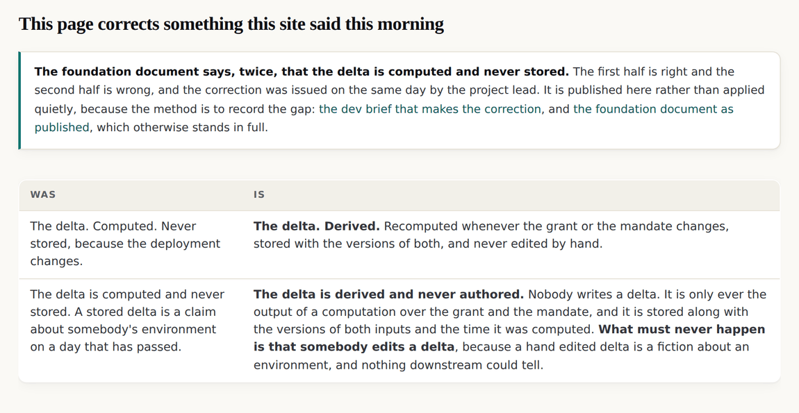
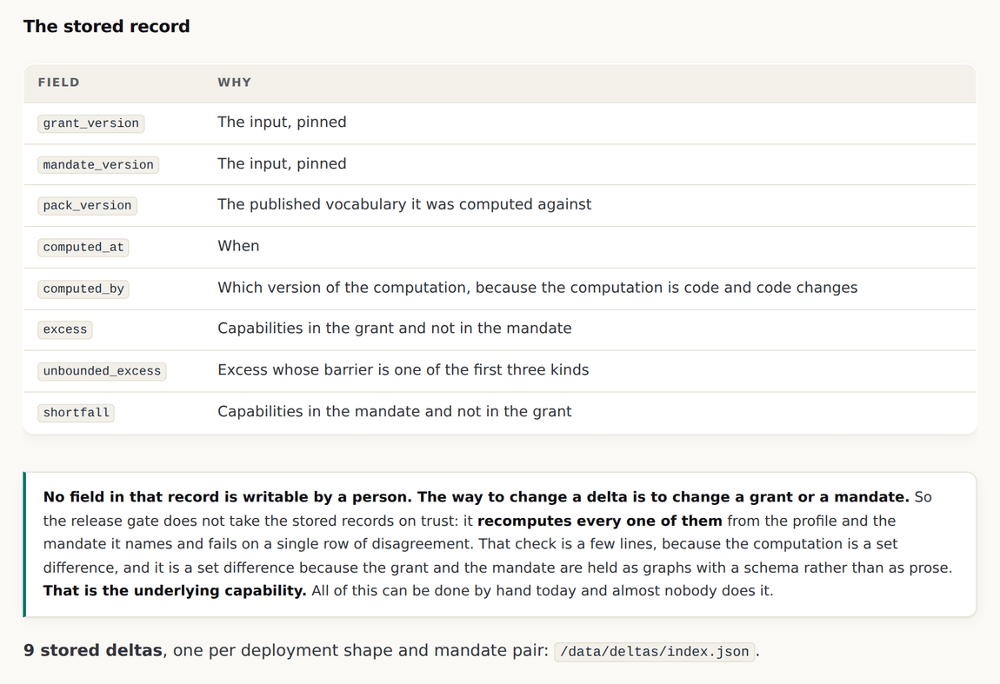
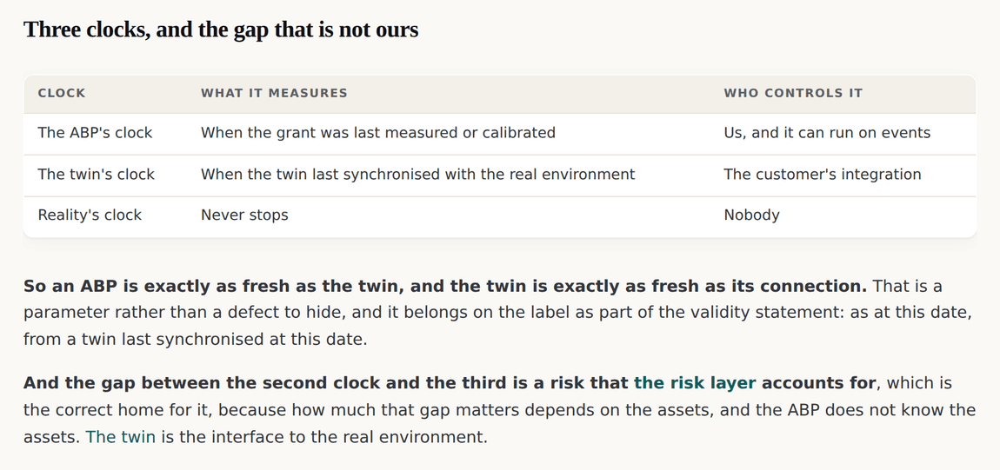
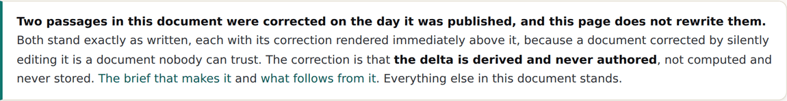

v0.2.0: A rule this site published in the morning was wrong by the afternoon, and the correction is on the page
The foundation document says twice that the delta is computed and never stored. Half of that was right. The corrected rule is harder, the passages were not rewritten, and the check that enforced the old rule was inverted to enforce the new one.
v0.2.0 tag, so it shows the site as it stood at that release and not as it stands today. Read on to v0.3.0, or back to v0.1.0.The rule that was wrong by lunchtime
The foundation document was published on the morning of 11 September. It says, twice, that the delta is computed and never stored. Nine hours later the project lead corrected it, and v0.2.0 is that correction applied in the open.
The first half was right and the second half was wrong. The corrected rule is that the delta is derived and never authored, which is the harder rule, because it forbids the act rather than the artefact.

What the old rule was protecting, and why all of it survives
The sentence being corrected was guarding against three real things, and the correction loses none of them.
| The fear | Does the correction still handle it |
|---|---|
| A stored delta becomes a stale claim about somebody's environment | Yes. It carries the versions of its inputs and the time it was computed, so its staleness is a fact rather than a surprise |
| A delta gets hand edited into a fiction | Yes, and more strongly. Never authored forbids the act; never stored only forbade the artefact |
| A delta is treated as authoritative after the inputs move | Yes. It reacts. A recompute is cheap because the inputs are graphs with a schema rather than prose |
And the correction gains the history, which the old rule made impossible. Asking whether a control was in place throughout a period is a question about a series, and a recomputed present cannot answer it.
The word for this already existed
A stored result of a computation over other data, refreshed when its inputs change, never edited directly, is a materialised view. The vocabulary is decades old and it carries exactly the right properties: it exists for use, it has a refresh policy, its staleness is knowable, and writing to it directly is a category error rather than a permission question.

The check was inverted rather than removed
Until this release the release gate refused any file carrying a delta, which is how a machine holds a rule that says never stored. The corrected rule needs the opposite check, and it is the more useful one.
validate: OK -- v0.2.0 on abp.sgit.ai, 55 pages, links resolve, every page has a twin and is in llms.txt, no score vocabulary, no forbidden word, no em dash outside the promoted data, the upstream bytes hash to their manifest, and EVERY STORED DELTA RECOMPUTES FROM ITS OWN PINNED INPUTS.
The gate does not take a stored record on trust. It recomputes every one of them from the profile and the mandate it names and fails on a single row of disagreement, including the ordering. That check is a few lines, because the computation is a set difference, and it is a set difference because the grant and the mandate are held as graphs with a schema rather than as prose. That is the underlying capability. All of it can be done by hand today and almost nobody does it.
Reality is the third input
The grant is a model of what the agent can do and the mandate is a statement of what somebody meant. Both are interpretations and both improve. A capability nobody had listed turns up; a barrier was recorded at the wrong kind; something in the mandate never happens.

The document was not rewritten
The foundation document is the definition the rest of the site stands on, and it is the document being put in front of people for feedback. Both corrected passages stand exactly as published, each with its correction rendered immediately above it.

What this release did not settle
- What the recompute policy is: on every event, on a schedule, on read, or a combination. It decides how much a receiver has to do.
- Who sets the thresholds a consequence hooks to: the customer, the underwriter, or a default published here. All three have different shapes, and a threshold crossing is a record while the consequence is something somebody set in advance.
- How a calibration contribution is submitted without revealing the deployment, since a correction to a capability row implies somebody runs that shape.
- What happens to a stored delta whose computation version is superseded: recomputed, marked, or left as the record of what was believed at the time. The third is the most honest and the least useful.
The delta · The stored deltas as JSON · v0.2.0's own release record